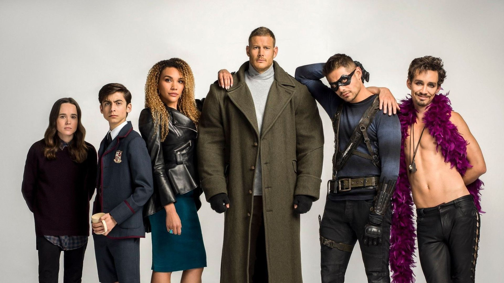

The Umbrella Academy

Personagens Principais
Número 5 (Aidan Gallagher) é facilmente um dos mais letais de toda a academia Umbrella, entre seus poderes mais marcantes estão: manipulação do espaço-tempo, que são expressados como a teleportação e a criocinese (viajar no tempo). Igual a seus irmãos, Número 5 é mestre em combate, além de ser mestre em assassinato, ter uma inteligência melhorada, expert em tática e expert em intimidação.
Klaus (Robert Sheehan) é dotado de três poderes e estes incluem: mediunidade, evocação (de espíritos) e imortalidade, além de claro, ser expert em combate. Apesar dos poderes, ironicamente, ele tem medo dos mortos, então ele usa álcool e drogas para se automedicar e manter seus poderes amortecidos.
Ben Hargreeves (Justin H. Min) é uma personagem que fica complicada a partir da segunda e terceira temporada da série, já que em uma linha do tempo - quando era 6 - ele estava morto e em outro - como número 2 - ele está vivo. De qualquer modo, em ambas as linhas do tempo, tanto como na Umbrella e na Sparrow, os poderes de Ben não mudam. Ele consegue sumonar tentáculos de um portal em sua barriga e, enquanto estava morto, conseguia possuir algumas pessoas.
Diego (David Castañeda) consegue manipular a trajetória de objetos, portanto sempre consegue faze-los chegar no ponto exato que quiser. Mas mesmo com apenas um poder sobre-humano, Número 2 também tinha outras habilidades importantes como ser um mestre em atirar facas, em artes marciais e expert em lutar com bastão (ou vara).
Viktor/Vanya Hargreeves (Elliot Page), certamente um dos personagens com mais poderes na série, tem o dom de controlar o som e energia. Suas habilidades são: absorção, manipulação e projeção do som, telecinese, voar, projetar energia, geração de campo de força, manipulação da matéria, atmocinese - controlar condições meteorológicas - audição aprimorada, distribuição de seus poderes com qualquer pessoa e a retirada dos mesmos e telepatia. Com isso tudo, Viktor ainda consegue ser dedicado ao violino, no qual também é expert.

Luther (Tom Hopper), o número 1 da academia Umbrella é bem dotado de poderes bem conhecidos e que fazem ele se igualar a um super herói comum. Com super força e resiliência aprimorada, Luther é praticamente um humano com habilidades melhoradas - mas será que passa no teste de abrir um vidro de picles? Além disso, ele tem mais duas habilidades que todo o líder precisa: é um expert em liderança e perícia em combate desarmado.

Allison (Emmy Raver-Lampman) consegue usar sua voz para tudo, tanto que ambos poderes que tem são feitos usando o sentido da fala. A Número 3 consegue manipular tanto a realidade quanto a mente das pessoas. Ao prefaciar uma declaração com "Ouvi um boato", Allison pode obrigar as pessoas a fazerem o que ela deseja.
A capacidade de Allison de afetar mentalmente os outros usando sua voz também pode, até certo ponto, manipular e influenciar a realidade. Mais tarde, durante a segunda temporada, ela pode causar fenômenos espontâneos sempre que usa sua voz nos outros. Para completar seus poderes, Allison também é expert em combate.

Sir Reginald Hargreeves (Colm Feore) é um alienígena disfarçado que mudou a humanidade com grandes invenções científicas. Além de medalhista olímpico é vencedor do Prêmio Nobel por seu trabalho de aperfeiçoamento cerebral de chimpanzés. Já adulto, O Monóculo saiu em busca de crianças que nasceram de forma inexplicável e com elas quais formou a equipe Umbrella Academy para salvar o mundo (mesmo que ele próprio não soubesse exatamente de que). Hargreeves é lembrado como um pai terrível, causando mágoa em boa parte da equipe.

Phinneus Pogo (Adam Godley) foi um dos chimpanzés alterados geneticamente pelo Sir Reginald, que o manteve como parte da família. Pogo já trabalhava para Hargreeves quando as crianças foram adotadas, servindo como babá e figura paterna para muitos deles.